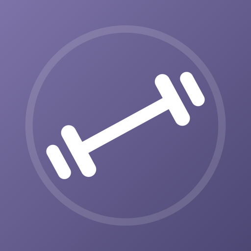

Privacy Policy
Last updated 30 October 2026
+Ultra is a workout log that keeps your training data on your own device and in accounts you already control. There is no +Ultra account, no advertising, no third-party analytics, and no tracking. The developer cannot see your workouts, meals, weight, photos, or health data.
Everything you log is written to a private database on your iPhone using Apple's SwiftData, and stays there:
The app also uses local device storage for your settings (including your reminders, changes you make to this week's plan, and the coach notes you marked Not useful), the food-lookup cache, the performance reports iOS gives the app (You > Data & Backup > Diagnostics, kept on your iPhone and never sent anywhere unless you share one yourself), and — on Apple Watch — a copy of the exercise list and today's sets so the watch app is useful before your phone reconnects. Reminders and the optional rest alarm are scheduled on your device by iOS.
Reminders you turn on in You > Reminders are written on your iPhone from your own log: today's plan, your week streak, last week's totals, or how much protein or water you have logged so far. They never mention sleep or any Apple Health reading. If you allow it in iOS Settings, the reminder at your usual training time is marked Time Sensitive so it can show during a Focus.
Strength levels and percentiles are worked out on your iPhone from published Strength Level tables built into the app, from your lifts, your body weight and the sex in your profile; nothing is sent to look them up.
Your exercises and workouts are added to your iPhone's own Spotlight search so you can find them, and widgets, Live Activities and Apple Watch complications show parts of your log (such as today's plan, a rest countdown, or today's calories) on your Home Screen, Lock Screen and watch face. All of this stays on your devices.
If you grant permission, +Ultra exchanges data with the Health app on your device. Health data is governed by Apple's privacy protections, is never sent to the developer, and is never used for advertising or marketing. It stays on your iPhone: nothing +Ultra reads from Health goes on the leaderboard or Friends' PRs, or into your iCloud backup.
+Ultra writes to Health:
When you edit or delete a food, a drink of water or a weigh-in in +Ultra, +Ultra updates or removes the copy it wrote to Health. It never changes or removes data other apps wrote. Deleting a workout in +Ultra does not delete it from Health.
+Ultra reads from Health, to keep your stats accurate and to adjust training suggestions to how recovered you are:
With Cycle-aware insights on, +Ultra estimates your cycle phase and the days your next period may start from your period days, and compares your own estimated maxes, resting heart rate, sleep and heart rate variability across phases, against your own usual only. These estimates are not for contraception or fertility planning, and they never change your training plan. They are worked out on your iPhone each time the Cycle insights screen is opened and are never saved: they are not in +Ultra's database, your export, your iCloud backup, the training report, the leaderboard, widgets, notifications, Siri, Spotlight, or anything given to an AI model. They are never used for advertising and never leave your iPhone.
The coach compares your sleep, heart rate variability and resting heart rate with your own recent usual, never with other people, and treats them as hints: they can hold back a planned weight increase, never add one, and the coach does not diagnose anything. These readings are worked out on your iPhone, kept only in memory while the app is open, and are not saved, backed up to iCloud, or shared on the leaderboard.
The Sleep page (from Stats > All Charts, the coach's recovery sheet, or a Sleep card you pin to Home) shows last night's sleep stages, a Sleep Score that is +Ultra's own estimate, how regular your bedtimes are, and this week's sleep debt. It is worked out on your iPhone from Apple Health's sleep data each time the page opens and is not saved, backed up, shared, or put in notifications, widgets, the Lock Screen or anything given to an AI model. The coach does not read the Sleep Score.
If you turn on Health changes (You > Reminders, off until you turn it on), iOS may also wake +Ultra in the background when new sleep, heart rate variability or resting heart rate data arrives, so it can send at most one notification a day when one of them stays away from your own usual. The notification says only that there is a recovery hint from Apple Health and what the plan does, never a reading. So as not to repeat itself, +Ultra keeps on your iPhone which kind of change it last told you about and when; Delete All Data forgets it, and turning the switch off stops the background wakes.
During a workout on Apple Watch, the watch app also reads your heart rate and active energy to show them on the watch, and passes them to your iPhone to show during the session and on the Lock Screen. Those readings are not stored by +Ultra.
+Ultra does not read food or water other apps logged.
Workouts and weigh-ins read from Health stay on your iPhone: they are not included in your iCloud backup, the shared leaderboard or Friends' PRs. +Ultra keeps up with Health in the background - iOS may wake it when new workouts or weigh-ins arrive - and all of that happens on your iPhone.
You > Apple Health shows what +Ultra writes and reads, and when each last synced.
You choose what to grant, and you can change or revoke any of it at any time in the Health app under Sharing > Apps.
On iPhones with Apple Intelligence turned on, the coach's notes and chat, the after-workout summary, reading a meal you describe, and (on iOS 27) listing the foods in a meal photo use Apple's on-device language model. That model runs on your iPhone. +Ultra does not use Apple's Private Cloud Compute or any other online AI service, and nothing you ask it, or that it reads, is sent to the developer. Without Apple Intelligence, the same features answer from the app's own rules, also on your iPhone.
On iOS 26 or later you can log a set by voice ("100 for 6") or describe a meal out loud. +Ultra uses the microphone only while you hold or tap a mic button, and turns what you say into text with Apple's speech recognition on your iPhone. The audio is not recorded, kept or sent anywhere. The first time, iOS may download Apple's speech model for your language; that download carries nothing you said. The microphone and speech recognition each ask your permission first, and you can turn either off in iOS Settings.
+Ultra uses the camera only when you start one of these, and asks permission first:
Choosing a photo from your library uses the system photo picker, which gives +Ultra only the photo you pick and no access to the rest of your library.
Progress photos. Body photos you take or add under You > Progress Photos are stored only in +Ultra's database on your iPhone. Before a photo is stored, +Ultra re-draws it without its metadata, so the copy it keeps carries no location or camera details. Progress photos are not in your export, your iCloud backup, the training report or the leaderboard, and are never sent to the developer. You can put them behind Face ID (or your passcode): Face ID is checked by iOS, and +Ultra only learns whether it passed. A photo leaves the app only when you share it or choose Save Image from the share sheet, which saves that one photo to your Photos library (+Ultra asks for permission to add to your library, never to read it).
When you scan a product barcode or type a food search (Food), +Ultra sends that barcode or search term to Open Food Facts, a free community food database, and caches the result on your device. A search is sent once you pause typing, so it carries what you have typed so far. These requests carry no account, no device identifier, and nothing about you — just the barcode or the words you typed. Open Food Facts handles those requests under its own privacy policy.
Only standard product barcodes (EAN and UPC) are ever looked up; other codes the camera sees, such as QR codes, are ignored. Foods found in a meal photo or a meal you describe are matched against +Ultra's own food list on your iPhone; a word goes to Open Food Facts only if you then search for it yourself.
+Ultra can back your log up to your own private iCloud database, from You > Data & Backup > Back Up to iCloud, and after workout sessions once backup has been used. The backup holds your logged workouts, food, water, weigh-ins, your own exercises, saved meals, gyms and pain notes. It does not hold progress photos, or workouts and weigh-ins read from Apple Health. The backup is stored in your personal iCloud account under Apple's protection. The developer has no access to it, and it is never shared with other users.
You can restore it from You > Data & Backup > Restore from iCloud, and you can manage or remove app iCloud data in iOS Settings under your name > iCloud.
+Ultra's Leaderboard & Friends screen (on the You tab) compares weekly totals with people whose friend code you have added. To make that work, a small record is published to a shared, public database in the app's iCloud container, identified by your randomly generated friend code — not by your name, Apple ID, or email.
Only this is published:
Never published in this record: individual workouts, exercises, sets, meals, water, body weight, measurements, photos, pain notes, or anything read from Apple Health.
Anyone who knows your friend code can look up those weekly totals, so treat your code as semi-public and only share it with people you want to compare with. Publishing happens when you open the Friends screen, and again when you change the name it shows; you can stop it at any time with "Remove me from the shared leaderboard", which deletes your published record for everyone. Your code and friends list are kept so you can rejoin later with the same identity. Using the leaderboard needs you to be signed in to iCloud; Apple's iCloud service keeps the record under an identifier it makes for your account in this app only, which does not reveal your Apple ID to the developer.
If a friend's name is offensive, Report opens an email to support, written in your Mail app, naming their friend code and the name shown. Nothing is sent unless you send that email.
Friends' PRs (optional, off by default). If you turn on "Share my PRs with friends", +Ultra publishes, for each built-in weight-and-reps exercise you have lifted (up to 60), your best set (weight and reps) and the day you lifted it (no time), as a second record in the same public database under your random friend code. It is published when you open Friends or Friends' PRs. Anyone with your code can read it. It comes from the workouts you log in +Ultra; nothing from Apple Health is read for it or shared with it. +Ultra keeps your last list and your friends' last lists on your iPhone so the board opens offline. Custom exercise names, body weight and notes are never shared. Turning the switch off, or Delete All Data, deletes the record.
+Ultra offers actions to Siri, Shortcuts, Control Center and Live Activities, such as starting a workout, logging a set or water, or asking for today's plan. They run on your iPhone or Apple Watch against your own log, and +Ultra's answer is built on your device and is not sent to the developer. If you ask "Am I recovered?", the answer compares your sleep, heart rate variability and resting heart rate from Apple Health with your usual, and Siri shows and speaks it. When you use Siri, Apple handles your request under its own privacy policy. Today's plan on a widget, the Lock Screen or a Live Activity leaves your Health readings out.
You can import a file you exported from Strong or Hevy, or a +Ultra export, during setup or from You > Data & Backup > Import Data. +Ultra reads only the file you pick, on your iPhone; nothing is uploaded. During setup you can also bring in the workouts already in Apple Health, as described above.
If you tap a share button, +Ultra hands the text, image or file you chose to the standard iOS share sheet. Nothing is shared until you pick where it goes, and what happens next is governed by whichever app or service you send it to.
Training Report. Share Training Report makes a PDF of the weeks you choose on your iPhone - your name unless you untick it, sessions, your main lifts, weekly sets and volume, and, if you leave them ticked, your body weight and pain notes; nutrition averages only if you tick them. It is a temporary file handed to the share sheet and deleted when the sheet closes. Nothing is uploaded by +Ultra.
Ask your AI. On the Coach screen, Ask your AI writes a text summary of your recent training - lifts, sets and volume, body weight, and nutrition averages if you have logged enough food - for you to paste into ChatGPT, Claude or Gemini under your own account. +Ultra copies it or hands it to the share sheet and can open the assistant's app or website, but it sends nothing to those services itself, and you can preview every word first. Your name is not included. Your body weight trend may come from weigh-ins your scale saved to Apple Health, but the summary does not name that app, and no other Health readings are included: at most it says a lift was held back for a recovery hint from Apple Health. Once you paste it, that service's own privacy policy applies.
Diagnostics. A performance report under You > Data & Backup > Diagnostics can be shared the same way if you choose; it describes how the app ran, not what you logged.
+Ultra is free. You > Support +Ultra offers optional one-time tips, bought through the App Store. Apple handles the payment and your Apple Account; +Ultra only completes the purchase on your device and remembers there that you tipped, to say thank you. The developer receives no payment details, and nothing about your purchase is sent to the developer by the app. The developer sees only the sales reports Apple provides to every developer.
Contact Support (You > Help & About) opens an email in your own Mail app. It already names the +Ultra version and iOS version, so we know which build you mean; nothing else from the app is added, and nothing is sent until you send it. We use your email only to reply.
Export: You > Data & Backup > Export Data writes a CSV of your workouts, food, water, weigh-ins, your own exercises, saved meals, gyms and pain notes that you can keep or move elsewhere. Progress photos are never written into it. Import Data, on the same screen, reads it back.
Delete: You > Data & Backup > Delete All Data erases everything stored on the device — workouts, routines, meals, water, weight, body measurements, progress photos, pain notes, gyms, friends, and your profile, along with the food-lookup cache, the diagnostics reports and +Ultra's Spotlight entries — in one tap, after a confirmation that states what is and is not removed. You can also delete individual workouts, meals, photos and entries in the app. Deleting +Ultra from your device removes the on-device database with it. Data written to Apple Health stays in Health, where you can review and delete it. Your iCloud backup can be removed in iOS Settings > iCloud. Your leaderboard record is deleted by "Remove me from the shared leaderboard", or as part of Delete All Data; your shared PRs, by turning off "Share my PRs with friends", or as part of Delete All Data.
Permissions: revoke Health access at any time in the Health app under Sharing > Apps, and camera, microphone, speech recognition, Face ID and Photos access in iOS Settings > +Ultra.
+Ultra is rated 18+ on the App Store and is meant for adults. It is not directed at anyone under 18, and the developer does not knowingly collect personal information from them.
If this policy changes, the updated version will be posted on this page with a new date above. Material changes to what leaves your device will also be explained in the app.
Email us and we'll get back to you, usually within a day or two.
plusultrafitapp@gmail.com